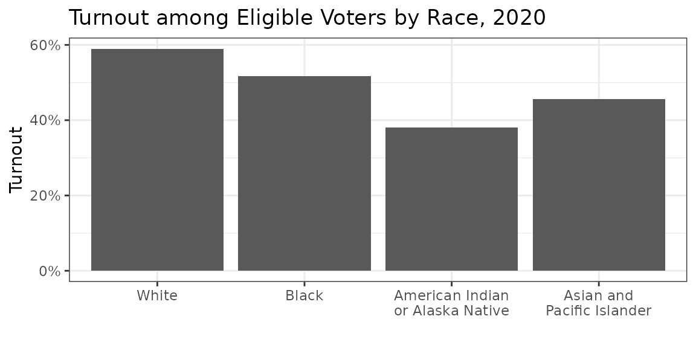
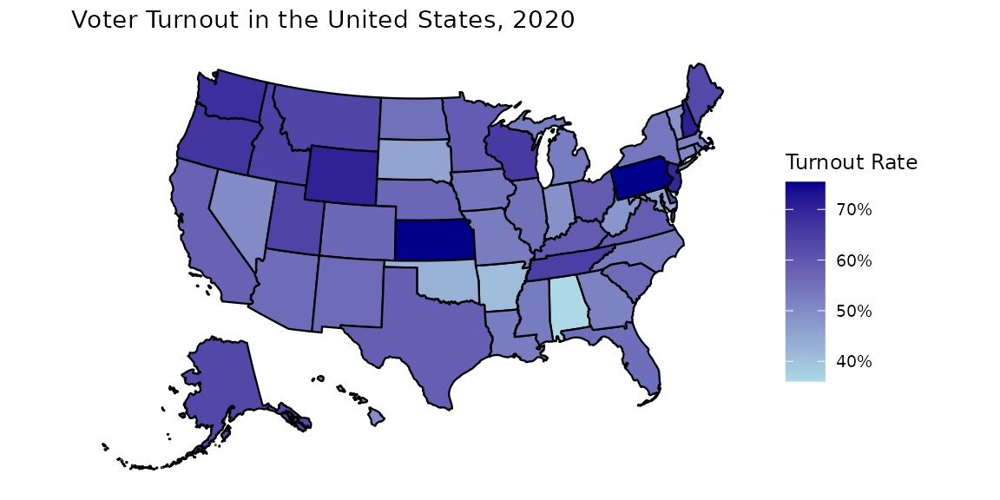
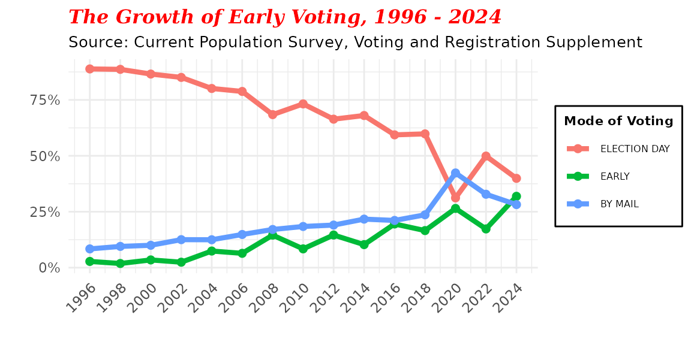
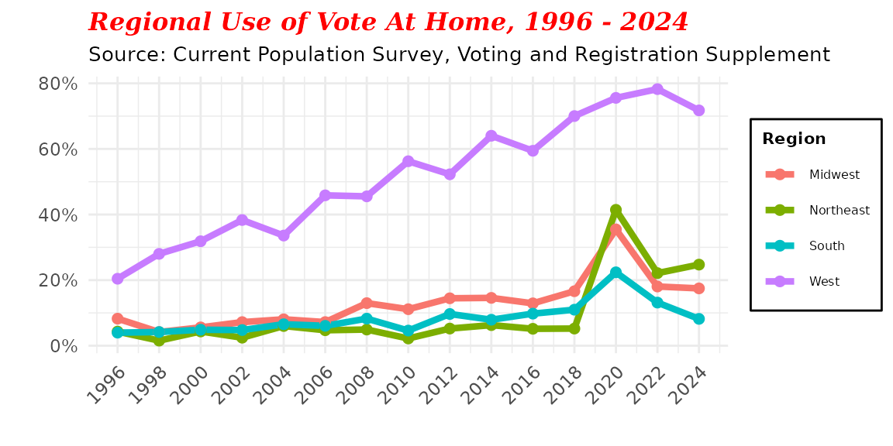
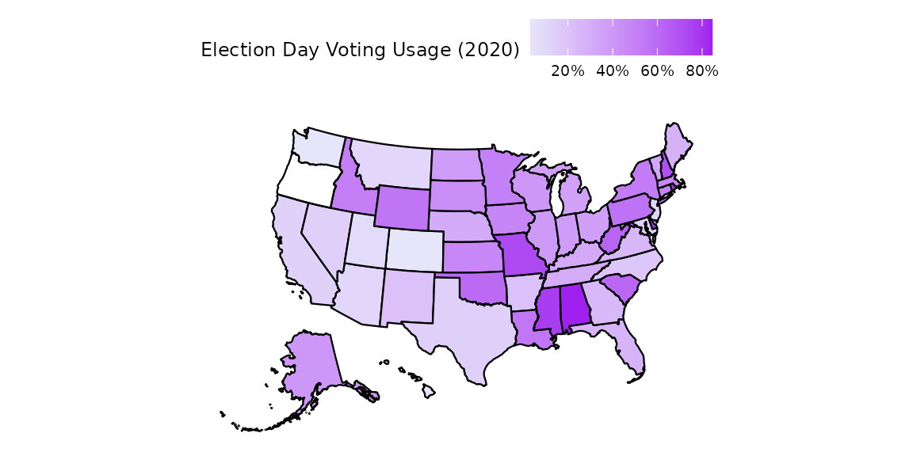
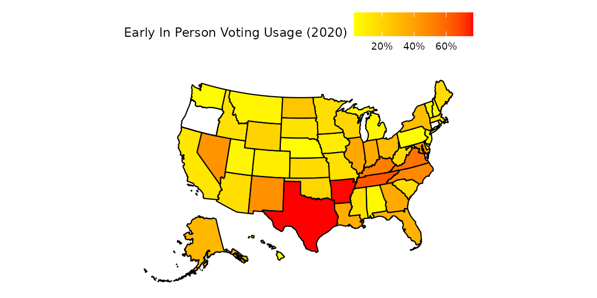
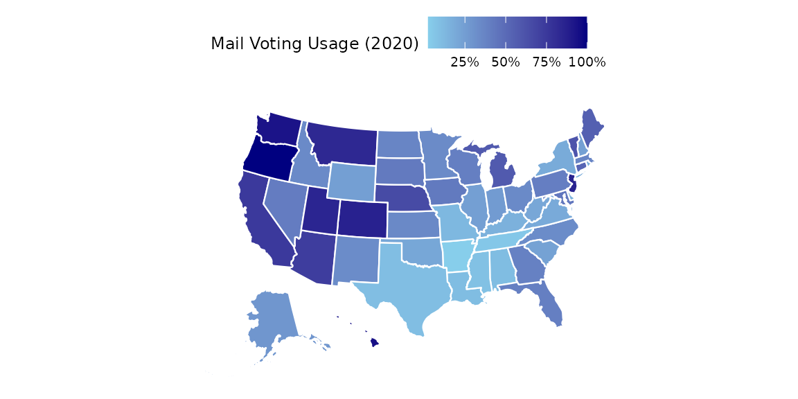

Note: The examples in this vignette use the built-in
cps_allyears_100ksample dataset (100,000 rows across all years). Estimates may differ slightly from analyses using the full CPS dataset. To work with the full data, usecps_load_basic().
The Current Population Survey’s Voting and Registration Supplement (CPS VRS), collected in November of every federal election year since 1964, is an important source to understand many aspects of the American elections system. Because of its relative stability over time, large sample sizes, and quality of administration, the CPS is a uniquely valuable data resource to estimate voter turnout in the United States, in individual states and regions, and among key demographic groups. The CPS is one of the primary ways we understand voter registration, voter turnout, and use of different modes of voting (Election Day, Early In-Person, By Mail) in the United States since 1996.
This vignette focuses on how the cpsvote package
provides a simple avenue to examine voter turnout and mode of voting.
The vignette includes detailed documentation of how the CPS codes voter
turnout and mode of voting, and documents the key data transformation
decisions made in the package that will allow easier comparison across
years. The vignette documents non-response bias in the CPS and how an
alternative post-stratification weight can be applied to adjust for this
bias. Finally, the vignette includes a series of examples of tables and
visualizations of voting turnout and use of different modes of voting
that illustrate some uses of cpsvote.
The vignette is organized into the following sections:
-
Overview: How
cpsvoteHelps Resolve Challenges in Using the CPS to Study Voting Behavior - Voter Turnout in the CPS
- Example: Estimating Voter Turnout in 2020
- Example: Estimating Turnout Within Racial Groups
- Example: A Simple Map of Voter Turnout by State
- Vote Mode in the CPS: Election Day, Early In-Person, and Absentee/Voting by Mail
- Example: Growth in Alternative Voting Modes
- Example: Growth in Vote By Mail Concentrated in the West
- Example: Mapping Alternative Methods of Voting
Overview: How cpsvote Helps Resolve Challenges in Using
the CPS to Study Voting Behavior
There are three major challenges in using the CPS VRS for estimating voter turnout and mode of voting.
The first is an idiosyncratic coding method that the Census has used
to code voter turnout which needs to be understood by the user, or else
basic descriptive statistics will not match those reported by the Census
in its documentation and reports. cpsvote creates two
summary columns, cps_turnout and
hurachen_turnout, that help resolve this coding
decision.
Second, and related, is a more complicated methodological issue that
involves changes in the rate of non-response (and resulting biases in
the CPS’s turnout estimates), which have grown over time. The
appropriate Census recodes and statistical adjustments for non-response
bias are automated by the package. cpsvote computes a new
survey weight, turnout_weight, that adjusts for these
biases.
Third, the CPS changed the way that it asked about mode of
voting, using a single question from 1996-2002 and two questions
from 2004 to present. cpsvote creates a consolidated
variable, VRS_VOTEMETHOD_CON, that codes for Election Day,
Early In-Person, and Voting By Mail from 1996-2024.
Voter Turnout in the CPS
The CPS has long used an “idiosyncratic” coding rule for reporting turnout, derived from the answer to question “PES1” since 1996 (in 1994, the question was labeled “PES3”). The coding rule is not clear from the CPS documentation, and without making the appropriate data transformations, any turnout estimates that are produced will not match those in official Census communications.
In short, the Census chose to code three categories of nonresponse as
nonvoters: “Don’t Know”, “Refused”, and “No Response”. The rule was
carefully documented by two scholars, Aram Hur and Christopher Achen, in
a 2013 article titled “Coding Voter Turnout
Responses in the Current Population Survey”. See
vignettes("background") for more details.
Because some users of the cpsvote package may not be
able to access this article, we reproduce the critical section from Hur
and Achen (2013) that describes the coding choices below:
In its official reports, however, the CPS does not follow the conventional academic coding rules for turnout responses. Instead, it treats Don’t Know, Refused, and No Response as indicating that the respondent did not vote… The Census Bureau’s decision to count the No Response individuals as nonvoters is consequential. No Response alone makes up 11.2 percent of the 2008 sample. Coding all of them, plus Don’t Know and Refused, as nonvoters reduces the estimated turnout rate by nearly 10 percentage points, cancelling most of the 12-point overreport in the original data.
Hur and Achen recommend coding the variable according to a scheme
familiar to more academics, where these nonresponse categories are
deleted listwise (considered NA) rather than counted as
nonvoters. The function cps_recode_vote will create columns
with these two different turnout codings.
The cpsvote package applies these two coding
schemes to create two new columns, cps_turnout and
hurachen_turnout.
A related problem with the CPS turnout estimate, documented carefully by Professor Michael McDonald in a 2014 working paper and at the United States Elections Project’s CPS Over-Report and Non-Response Bias Correction page is that, over time, two biases have crept into the CPS: one from increasing non-response rates, the second from over-reports of turnout (Michael McDonald, 2014, “What’s Wrong with the CPS?”, paper presented at the Annual Meeting of the American Political Science Association).
From the Hur and Achen (2013) abstract:
“The Voting and Registration Supplement to the Current Population Survey (CPS) employs a large sample size and has a very high response rate, and thus is often regarded as the gold standard among turnout surveys. In 2008, however, the CPS inaccurately estimated that presidential turnout had undergone a small decrease from 2004. We show that growing nonresponse plus a long-standing but idiosyncratic Census coding decision was responsible. We suggest that to cope with nonresponse and overreporting, users of the Voting Supplement sample should weight it to reflect actual state vote counts.”
Hur and Achen suggest a complex post-stratification adjustment to the data that will adjust for these biases:
We recommend dropping all categories of missing turnout response, and then poststratifying the remaining CPS sample so that the survey turnout rate in each state matches the corresponding state VEP turnout.
Professor Michael McDonald of the University of Florida helpfully
provides guidance on this more complex procedure. Commentary,
Guidelines, and Stata Code is available at the US Elections website.
We have adapted this code for R and have integrated it into
the cpsvote package in the function
cps_reweight_turnout().
The Hur and Achen corrections have been integrated into the
cpsvote package.
Example: Estimating Voter Turnout in 2020
library(cpsvote)
library(srvyr)
library(dplyr)
data("cps_allyears_100k")
cps20 <- cps_allyears_100k %>% filter(YEAR == 2020)
# unweighted, using the census turnout coding
cps20_unweighted <- cps20 %>%
summarize(type = "Unweighted",
turnout = mean(cps_turnout == "YES", na.rm = TRUE))
# weighted, using the original weights and census turnout coding
cps20_censusweight <- cps20 %>%
as_survey_design(weights = WEIGHT) %>%
summarize(turnout = survey_mean(cps_turnout == "YES", na.rm = TRUE)) %>%
mutate(type = "Census")
# weighted, using the modified weights and hur-achen turnout coding
cps20_hurachenweight <- cps20 %>%
as_survey_design(weights = turnout_weight) %>%
summarize(turnout = survey_mean(hurachen_turnout == "YES", na.rm = TRUE)) %>%
mutate(type = "Hur & Achen")
turnout_estimates <- bind_rows(cps20_unweighted,
cps20_censusweight,
cps20_hurachenweight) %>%
transmute('Method' = type,
'Turnout Estimate' = scales::percent(turnout, .1))
knitr::kable(turnout_estimates)| Method | Turnout Estimate |
|---|---|
| Unweighted | 67.4% |
| Census | 66.7% |
| Hur & Achen | 56.9% |
This table shows the slight overestimate of turnout using the Census method, because it fails to account for growing non-response bias.
Example: Estimating Turnout Within Racial Groups
The advantage of using the srvyr syntax is illustrated
in this example. We can use the filter and
group_by commands directly in a single command set below,
because srvyr works behind the scenes to create the correct
survey commands. If you were using survey, you
could not pipe the results directly into ggplot, but would
have had to create an intermediate data frame.
cps20 %>%
as_survey_design(weights = turnout_weight) %>%
filter(RACE %in% c("WHITE", "BLACK", "AMERICAN INDIAN OR ALASKA NATIVE",
"ASIAN, PACIFIC ISLANDER, OR NATIVE HAWAIIAN")) %>%
group_by(RACE) %>%
summarize(turnout = survey_mean(hurachen_turnout == "YES", na.rm = TRUE)) %>%
ggplot(aes(x = RACE, y = turnout)) +
geom_col() +
scale_x_discrete(labels = c("WHITE" = "White",
"BLACK" = "Black",
"AMERICAN INDIAN OR ALASKA NATIVE" = "American Indian\nor Alaska Native",
"ASIAN, PACIFIC ISLANDER, OR NATIVE HAWAIIAN" = "Asian and\nPacific Islander")) +
scale_y_continuous(labels = scales::percent) +
labs(x = "", y = "Turnout", title = "Turnout among Eligible Voters by Race, 2020") +
theme_bw() +
theme(axis.text.x = element_text(hjust = 0.5))
Example: A Simple Map of Voter Turnout by State
Here we use the usmap package to provide a quick look at
voter turnout in 2020 across the 50 states.
cps20 %>%
as_survey_design(weights = turnout_weight) %>%
mutate(state = STATE) %>% # necessary column name for plot_usmap
group_by(state) %>%
summarize(turnout = survey_mean(hurachen_turnout == "YES", na.rm = TRUE)) %>%
plot_usmap(data = ., values = "turnout", color = "black", size = 0.1) +
scale_fill_continuous(low = "lightblue", high = "darkblue", name = "Turnout Rate",
labels = scales::percent_format(accuracy = 1)) +
theme(legend.position = "right") + labs(title = "Voter Turnout in the United States, 2020")
Vote Mode in the CPS: Election Day, Early In-Person, and Absentee/Voting by Mail
Capturing the difference between casting an in-person ballot on Election Day, an in-person ballot early at a designated location, and a ballot cast “by mail” (either absentee or in full vote-by-mail states) is difficult given the various ways that states allow for a ballot to be cast. For instance, if a state allows you to appear at a county office before or on Election Day, request an absentee ballot, and complete and submit it at that time, is that voting “in person” or “by mail”?
We will put aside these complexities to discuss how the CPS has captured this voting activity, what is called the “mode of voting”, over time. There is one major change to pay attention to. From 1996-2002, the CPS asked a single question (PES4), that included the options “In person on election day,” “In person before election day”, and “Voted by mail (absentee).” Starting in 2004 and continuing through the present, the CPS started to ask about the time that a respondent cast their ballot (PES5: “On Election Day”, “Before Election Day”) and the method by which the ballot was cast (PES6: “In Person”, “By Mail”).
The table below provides an overview of these coding decisions:
cpsvote Output
|
Census Input | 2004-present | 1996 - 2002 |
| VRS_VOTEMETHOD_CON | PES5 | PES6 | PES4 |
| Election Day | In Person | Election day | In person on election day |
| Early | In Person | Before Election Day | In person before election day |
| By Mail | By Mail | Election Day, Before Election Day | Voted by mail (absentee) |
The cpsvote package creates a column labeled
VRS_VOTEMETHOD_CON (vote method “consolidated”) that can be
used to compare the use of Election Day, Early In-Person, and
Absentee/Voting By Mail across states and over years. From 1996-2002,
cpsvote uses the values in PES4. From 2004 to the present,
the answers to PES5 and PES6 are combined to create a three category
vote mode variable (“Election Day”, “Early”, “By Mail”). The package
assumes that an answer of “By Mail” counts as absentee/voting by mail,
regardless of “when” the respondent said the ballot was cast.
Example: Growth in Alternative Voting Modes
The use of early in-person voting and voting by mail has grown
enormously in the past quarter century, with distinct regional patterns
to the use of different modes of voting. In the code below, we first
create a column labeled census_region that will allow us to
make regional comparisons, and apply the survey weights to the full CPS
dataset.
cps_region <- cps_allyears_100k %>%
# since this is only among voters, either weight can be used equivalently
as_survey_design(weights = turnout_weight) %>%
mutate(census_region = case_when(
STATE %in% c("ME", "NH", "VT", "MA", "CT",
"RI", "NY", "PA", "NJ") ~ "Northeast",
STATE %in% c("ME", "DE", "WV", "DC", "VA",
"NC", "SC", "GA", "FL", "KY",
"TN", "MS", "AL", "OK", "AR",
"LA", "TX") ~ "South",
STATE %in% c("WI", "MI", "IL", "IN", "OH",
"ND", "MN", "SD", "IA", "NE",
"MO", "KS") ~ "Midwest",
STATE %in% c("MT", "ID", "WY", "NV", "UT",
"CO", "AZ", "NM", "WA", "OR",
"CA", "AK", "HI") ~ "West"
)
)The first visualization shows the growth of voting outside of Election Day, which began in the late 1970s and accelerated after 2000.
cps_region %>%
filter(YEAR > 1994 & !is.na(VRS_VOTEMETHOD_CON)) %>%
group_by(YEAR, VRS_VOTEMETHOD_CON) %>%
summarize(value = survey_mean(na.rm = TRUE)) %>%
ggplot(aes(x = YEAR, y = value, col = VRS_VOTEMETHOD_CON, group = VRS_VOTEMETHOD_CON)) +
geom_line(size = 1.5) +
geom_point(aes(x = YEAR, y = value, color = VRS_VOTEMETHOD_CON), size = 2) +
scale_x_continuous(breaks = seq(1996, 2024, by = 2)) +
scale_y_continuous(labels = scales::percent) +
labs(title = "The Growth of Early Voting, 1996 - 2024",
subtitle = "Source: Current Population Survey, Voting and Registration Supplement",
color = "Mode of Voting",
y = "",
x = "") +
theme_minimal() +
theme(plot.title = element_text(size = 12, family = "serif",
face = "bold.italic", colour = "red"),
plot.subtitle = element_text(size = 10),
legend.background = element_rect(),
legend.title = element_text(size = 8, face = "bold"),
legend.text = element_text(size = 6),
axis.text.x = element_text(angle = 45, hjust = 1))
Example: Growth in Vote By Mail Concentrated in the West
Absentee/Voting By Mail has been most popular among voters in the Western US. This distinct regional pattern is displayed in the next visualization. By the 2016 election, 70% of ballots were cast by mail in the West, compared to under 20% in the rest of the country.
cps_region %>%
filter(YEAR > 1994 & !is.na(VRS_VOTEMETHOD_CON) & !is.na(census_region)) %>%
group_by(YEAR, census_region) %>%
summarize(value = survey_mean(VRS_VOTEMETHOD_CON == "BY MAIL", na.rm = TRUE)) %>%
ggplot(aes(x = YEAR, y = value, col = census_region, group = census_region)) +
geom_line(size = 1.5) +
geom_point(aes(x = YEAR, y = value, color = census_region), size = 2) +
theme_minimal() +
scale_x_continuous(breaks = seq(1996, 2024, by = 2)) +
scale_y_continuous(labels = scales::percent) +
labs(title = "Regional Use of Vote At Home, 1996 - 2024",
subtitle = "Source: Current Population Survey, Voting and Registration Supplement",
color = "Region") +
theme(plot.title = element_text(size = 12, family = "serif",
face = "bold.italic", colour = "red"),
plot.subtitle = element_text(size = 10),
legend.background = element_rect(),
legend.title = element_text(size = 8, face = "bold"),
legend.text = element_text(size = 6),
axis.text.x = element_text(angle = 45, hjust = 1)) +
ylab("") + xlab("") 
Example: Mapping Alternative Methods of Voting
The next three maps display the great diversity across the 50 states in the use of Election Day voting (most popular in the Northeast and some areas of the Midwest and South); Early In-Person voting (most popular in Nevada, New Mexico, and several Southern states); and Absentee/Voting By Mail (most popular in the West, where Colorado, Hawaii, Oregon, Utah, and Washington all have full vote-by-mail elections, in addition to several states that sent all voters a mail ballot due to the COVID-19 pandemic).
map_data <- cps20 %>%
as_survey_design(weights = turnout_weight) %>%
filter(!is.na(STATE), !is.na(VRS_VOTEMETHOD_CON)) %>%
mutate(state = STATE) %>% # this is a necessary column name for plot_usmap
group_by(state, VRS_VOTEMETHOD_CON) %>%
summarize(value = survey_mean(na.rm = TRUE))
map_data %>%
filter(VRS_VOTEMETHOD_CON == "ELECTION DAY") %>%
plot_usmap(data = ., values = "value", color = "black", size = 0.1) +
theme(legend.position = "top") +
scale_fill_gradient(low = "lavender", high = "purple", na.value = NA,
name = "Election Day Voting Usage (2020)",
labels = scales::percent)
map_data %>%
filter(VRS_VOTEMETHOD_CON == "EARLY") %>%
plot_usmap(data = ., values = "value", color = "black", size = 0.1) +
theme(legend.position = "top") +
scale_fill_gradient(low = "yellow", high = "red", na.value = NA,
name = "Early In Person Voting Usage (2020)",
labels = scales::percent)
map_data %>%
filter(VRS_VOTEMETHOD_CON == "BY MAIL") %>%
plot_usmap(data = ., values = "value", color = "white", size = 0.1) +
theme(legend.position = "top") +
scale_fill_gradient(low = "sky blue", high = "navy", na.value = NA,
name = "Mail Voting Usage (2020)",
labels = scales::percent)